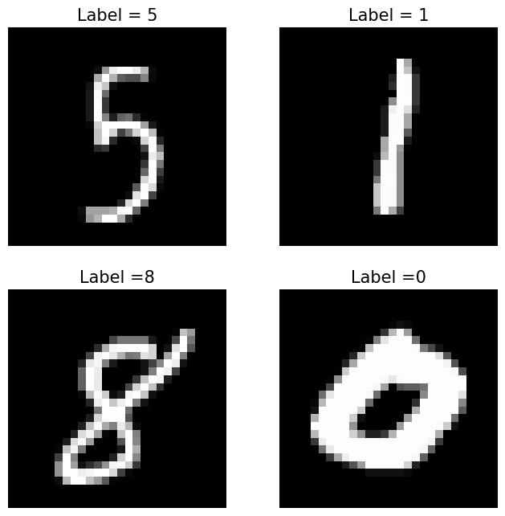

Backpropagation by Hand: Gradient Derivations for MNIST Classification
Welcome to my very first post of the blog! I wanted to take some time to brush up on ML foundations and what better way to learn (or re-learn) technical topics than to write up one’s findings? I’m also hoping that treating these blog posts as final artifacts will be a useful forcing function for actually completing the projects.
Into the meaty content. In this post, I will walk through the implementation of a simple fully-connected neural network to tackle image classification on the MNIST dataset. I will implement backpropagation and stochastic gradient descent from scratch using numpy and provide high-level derivations and intuition for computing weight updates of each of the neurons, but I’ll try not to get overly academic with it. This was a fun and surprisingly challenging exercise, and it made me even more thankful that mature automatic differentiation libraries like pytorch exist - I imagine that manually computing gradients for a 30+ layer ResNet would entail a special kind of masochism.
MNIST Digit Classification
Let’s begin by laying some notational groundwork for the MNIST classification task. As usual for supervised learning problems, we consider the setting where we are provided a dataset $\mathcal{D}$ consisting of input vectors $x$ and label vectors $y$:
$$\mathcal{D} = \bigl\lbrace (x^{(i)}, y^{(i)}) \bigr\rbrace_{i=1}^m, $$
where $m$ is the number of samples in our dataset. The standard MNIST dataset consists of 60,000 training images and 10,000 test images, which we will call $\mathcal{D_{\text{train}}}$ and $\mathcal{D_{\text{test}}}$. An image can be represented as a column vector:
$$x^{(i)} = [x_1^{(i)}, x_2^{(i)}, …, x_{n_x}^{(i)}]^T,$$
where $n_x = 28 \times 28$ is the number of pixels in each image. Each image has a real-valued label $y^{(i)} \in [0, 9]$ that indicates which digit, or class, the image corresponds to. To help us perform classification, we will represent this as a one-hot encoded vector:
$$y^{(i)} = [y_1^{(i)}, y_2^{(i)}, …, y_{n_y}^{(i)}]^T,$$ where $n_y = 10$ is the number of digits or classes to choose from and
$$ y_k^{(i)} = \begin{cases} 1 & \text{if class } k \text{ is the correct class}, \\\ 0 & \text{otherwise}. \end{cases} $$
Below we can see some sample images from this dataset, along with their corresponding labels.

Because we have multiple digits to choose from, we consider this a multi-class classification problem, where the goal is roughly to find some function $f(x)$ that is able to correctly determine the labels for as many images in our dataset (or more precisely, our test set) as possible.
Neural Network Definition
TODO: introduce batch/vector notation here
Most of you are probably familiar enough with neural networks that I can skip a conceptual introduction. Instead, I will move into defining the neural network as a mathematical function, so that we can work with each part for our backprop derivations.
Let $f(x; W)$ be the classification function (model) parameterized by weights $W$ and biases $b$; for notation simplicity, we can absorb $b$ into $W$. This classification function outputs the predicted label $\hat{y}^{(i)} = f(x^{(i)}; W) = \arg\max_c f_c(x^{(i)}; W)$, where $f_c(x^{(i)}; W)$ is the score or probability for class $c$. This function $f_c$ is what we will be modeling with our neural network.
Neural networks may have an abritrary number of layers (hence the name deep learning), and we will use the notation $W^{[l]}$ and $b^{[l]}$ to denote the weights and biases for layer $l$. For our model, we will use a network with a single hidden layer of size 128. The output of this hidden layer is:
$$h = \sigma (W^{[1]} x^{(i)} + b^{[1]}),$$
where $W^{[1]} \in \mathbb{R}^{n_h \times n_x}$ is the hidden layer’s weight matrix, $b^{[1]} \in \mathbb{R}^{n_x}$ is the bias vector, $n_h = 128$ is the hidden layer size, and $\sigma$ is the sigmoid activation function. The dimensions of each matrix and vector become quite important during implementation - shape errors tend to be where I spend much of my debugging time in the early stages of a project.
For classification problems where a single label is predicted, it is typical to use the softmax function to convert the final layer outputs into a probability distribution:
$$\text{softmax}(z) = \frac{e^{z}}{\sum_{j=1}^{C} e^{z}_{j}}.$$
With this, the final output of our neural network becomes:
$$f_c(x^{(i)}; \theta) = \text{softmax} (W^{[2]} h + b^{[2]}),$$
where $W^{[2]} \in \mathbb{R}^{n_y \times n_h}$ and $b^{[2]} \in \mathbb{R}^{n_y}$ are the output layer’s weight matrix and bias vector, respectively.
Pictorally, our network looks something like this… TODO
And here is my implementation of a fully-connected neural network (i.e. FCNetwork) in python:
import numpy as np
def sigmoid(x):
return 1 / (1 + np.exp(-x))
def softmax(z):
exp_z = np.exp(z - np.max(z, axis=1, keepdims=True)) # Subtract max(z) for numerical stability
return exp_z / exp_z.sum(axis=1, keepdims=True)
class FCNetwork():
"""Single hidden layer network"""
def __init__(self, input_dim, hidden_dim, output_dim, activation=sigmoid):
self.w1 = np.random.randn(input_dim, hidden_dim) * np.sqrt(1. / input_dim) # d x h
self.w2 = np.random.randn(hidden_dim, output_dim) * np.sqrt(1. / hidden_dim) # h x 10
self.b1 = np.random.rand(1, hidden_dim) # 1 x h
self.b2 = np.random.rand(1, output_dim) # 1 x 10
self.activation = activation
def forward(self, X):
batch_size = X.shape[0]
X = X.reshape((batch_size, -1))
z1 = np.dot(X, self.w1) + self.b1
h = self.activation(z1)
z2 = np.dot(h, self.w2) + self.b2
f_c = softmax(z2)
return z1, h, z2, f_c
def predict(self, X):
_, _, _, f_c = self.forward(X)
y_hat = np.argmax(f_c, axis=1)
return y_hat
The forward function returns a vector of softmax distributions $f_c$ for a batch of samples X, along with other variables that will be useful for backpropagation, while the predict function returns a vector of predicted classes $\hat{y}^{(i)}$.
Gradient Descent with Backpropagation
We now have a parameterized model that is capable of representing a variety of functions. Our goal is to find the function which provides the best fit with respect to our dataset $\mathcal{D}$. To accomplish this, we will introduce a loss function $J(W)$ as a measure of fit, and then minimize this function to find the optimal parameters of the model:
$$W_* = \arg\min_{W} J(W).$$
For multi-class classification problems, cross-entropy is a common loss function which measures the distance between the distribution produced by our model, and the true distribution $P(y|x)$. The cross-entropy loss for a single tuple $(x^{(i)}, y^{(i)})$ is defined as:
$$ \begin{equation} \label{eq:loss} J(W) = - \sum_{k=1}^{K} y_k^{(i)} \log \hat{y}_k^{(i)} \end{equation} $$
where $K = n_y$ is the number of classes.
To solve this optimization problem, we will use gradient descent with the backpropagation algorithm, which I will assume the reader has some familiarity with. At a high level, backpropagation allows us to efficiently compute the derivatives needed to perform gradient updates using the chain rule in calculus. During this process, derivatives from later layers in the network get passed back through previous layers, hence the name!
Deriving the Backprop Learning Updates
At this point, the fastest way forward would be to use an automatic differentiation library like pytorch to handle all the gradient computations and not muddle ourselves in all the mathematical details. But where would be the fun in that? Let’s go ahead and derive the gradient descent updates ourselves.
Updating parameters $\theta$ at each iteration of gradient descent is a matter of taking a step in the direction of steepest descent in the loss function, with step size $\alpha$:
$$ \theta \leftarrow \theta - \alpha \nabla J(\theta).$$
Breaking down the gradient by each set of weights and biases in our network, we arrive at the following four equations to be solved:
$$ \begin{align*} W^{[1]} & \leftarrow W^{[1]} - \alpha \frac{\partial J}{\partial W^{[1]}} \\\ b^{[1]} & \leftarrow b^{[1]} - \alpha \frac{\partial J}{\partial b^{[1]}} \\\ W^{[2]} & \leftarrow W^{[2]} - \alpha \frac{\partial J}{\partial W^{[2]}} \\\ b^{[2]} & \leftarrow b^{[2]} - \alpha \frac{\partial J}{\partial b^{[2]}}. \\\ \end{align*} $$
It’s important to remember that $W^{[l]}$ is a matrix and $b^{[l]}$ is a vector, so the result of each derivative here will be either a matrix or vector as well. The components of these derivative objects is the partial derivative with respect to each individual weight. That is,
$$ \begin{equation} \label{eq:jacobian} \frac{\partial J}{\partial W^{[l]}} = \begin{bmatrix} \frac{\partial J}{\partial W_{1,1}^{[l]}} & \frac{\partial J}{\partial W_{1,2}^{[l]}} & \cdots & \frac{\partial J}{\partial W_{1,n_{l-1}}^{[l]}} \\\ \frac{\partial J}{\partial W_{2,1}^{[l]}} & \frac{\partial J}{\partial W_{2,2}^{[l]}} & \cdots & \frac{\partial J}{\partial W_{2,n_{l-1}}^{[l]}} \\\ \vdots & \vdots & \ddots & \vdots \\\ \frac{\partial J}{\partial W_{n_l,1}^{[l]}} & \frac{\partial J}{\partial W_{n_l,2}^{[l]}} & \cdots & \frac{\partial J}{\partial W_{n_l,n_{l-1}}^{[l]}} \\\ \end{bmatrix}, \end{equation} $$
where $n_l$ and $n_{l-1}$ are the number of neurons in layers $l$ and $l-1$, respectively.
Forward Pass
To begin with an iteration of backpropogation, we first do a forward pass, where we pass an input $x$ through the network. During the forward pass, we compute outputs at each stage of the network, and store some which will be used later during the backward pass. We introduce the variable $z^{[l]}$, to aid us during the backward pass as well:
$$ \begin{align*} z^{[1]} &= W^{[1]} x + b^{[1]} \\\ h &= \sigma(z^{[1]}) \\\ z^{[2]} &= W^{[2]} h + b^{[2]} \\\ \hat{y} &= \text{softmax}(z^{[2]}). \end{align*} $$
At this stage, it is helpful if we visualize how all of these outputs and parameters fit together. For simplicity, we’ll consider a network with 3 neurons in the hidden layer, 2 dimensions in the output, and 2 in the input vector.
[Placeholder: diagram of full network]
Backward Pass
For our backward pass, we will compute the partial derivatives needed for our learning update. To accomplish this, we use the chain rule to decompose the gradient into constituent parts. Let’s start with the weights in the output layer:
$$ \begin{align} \frac{\partial J}{\partial W_{j,i}^{[2]}} = \frac{\partial J}{\partial \hat{y_j}} \frac{\partial \hat{y_j}}{\partial z_j^{[2]}} \frac{\partial z_j^{[2]}}{\partial W_{j,i}^{[2]}} \end{align} $$
For the first term, we can solve simply:
$$ \frac{\partial J}{\partial \hat{y_j}} = \frac{\partial}{\partial \hat{y_j}} \bigl( - \sum_{k=1}^{K} y_k \log \hat{y}_k \bigr) = -\frac{y_j}{\hat{y}_j}, $$
by noting that the derivative is zero for each term in the sum, save for the case where $k=j$.
For the third term, again we note that the derivative is zero for each term in $W^{[2]} h$, except for $W_{j,i}^{[2]} h$:
$$ \begin{align*} \frac{\partial z_j^{[2]}}{\partial W_{j,i}^{[2]}} &= \frac{\partial }{\partial W_{j,i}^{[2]}} \bigl( W^{[2]} h + b^{[2]} \bigr) \\\ &= \frac{\partial }{\partial W_{j,i}^{[2]}} W_{j,i}^{[2]} h \\\ &= h \end{align*} $$
For the second term, things are slightly trickier. Notice in diagram [TODO: reference],
… For the first layer… Notice that the two terms were the same that we computed
Python Code for Backpropagation:
def backprop(X, y, model, learning_rate=0.01):
# Forward pass
y_hat = model.forward(X)
# Compute the error at the output layer
dz2 = y_hat - y # (batch_size, 10)
dw2 = np.dot(model.a1.T, dz2) / X.shape[0]
db2 = np.sum(dz2, axis=0, keepdims=True) / X.shape[0]
# Compute the error at the hidden layer
dz1 = np.dot(dz2, model.w2.T) * sigmoid_derivative(model.z1)
dw1 = np.dot(X.T, dz1) / X.shape[0]
db1 = np.sum(dz1, axis=0, keepdims=True) / X.shape[0]
# Update weights and biases
model.w2 -= learning_rate * dw2
model.b2 -= learning_rate * db2
model.w1 -= learning_rate * dw1
model.b1 -= learning_rate * db1
The backpropagation algorithm updates the weights (w1 and w2) and biases (b1 and b2) by computing the gradients of the loss with respect to each parameter. These gradients are used to adjust the parameters in the direction that reduces the loss, as governed by the learning rate.
Evaluating Performance
After training the model, we want to evaluate how well it generalizes to unseen data (our test set). The accuracy metric is a simple yet effective measure, especially for classification tasks like MNIST.
Python Code for Accuracy:
def accuracy(y_true, y_pred):
y_true_labels = np.argmax(y_true, axis=1)
y_pred_labels = np.argmax(y_pred, axis=1)
return np.mean(y_true_labels == y_pred_labels)
Here, we convert the one-hot encoded labels and predictions into their respective class indices using argmax, and then compute the percentage of correctly predicted examples.
Training the Model
We can now tie everything together in a training loop. The model will iterate over the training data, compute the loss, backpropagate the errors, and update its parameters.
Python Code for Training Loop:
epochs = 10
learning_rate = 0.01
for epoch in range(epochs):
for batch_idx, (X_batch, y_batch) in enumerate(train_loader):
X_batch = X_batch.view(X_batch.size(0), -1).numpy() # Flatten the input images
y_batch_onehot = np.eye(10)[y_batch.numpy()] # Convert labels to one-hot encoding
# Forward and Backpropagation
backprop(X_batch, y_batch_onehot, model, learning_rate)
# Test performance on test set
test_X = test_loader.dataset.data.view(-1, 28*28).numpy()
test_y = np.eye(10)[test_loader.dataset.targets.numpy()]
test_predictions = model.forward(test_X)
test_accuracy = accuracy(test_y, test_predictions)
print(f"Epoch {epoch+1}/{epochs} - Test Accuracy: {test_accuracy:.4f}")
This loop trains the model for a set number of epochs, where each epoch processes the entire dataset. After each epoch, we compute the accuracy on the test dataset.
Debugging
Training a neural network from scratch can often result in a few hiccups along the way, including issues like vanishing gradients, slow convergence, or poor generalization. A few debugging tips:
Check the learning rate: If the model is not improving, the learning rate may be too high or too low. Inspect gradients: If the weights are not updating properly, inspect the gradients and make sure they are neither too large nor vanishingly small. Try different activations: Sigmoid can suffer from saturation in deep networks. Experiment with ReLU or Leaky ReLU if needed.
Conclusion
In this post, we’ve implemented a fully connected neural network from scratch using NumPy, trained it using stochastic gradient descent and backpropagation, and tested it on the MNIST dataset. This foundational understanding will be useful as we move to more advanced architectures.
Next, we’ll take on the challenge of implementing a convolutional neural network (CNN) to tackle a more complex dataset, the CIFAR-10, where image recognition becomes more nuanced.
Stay tuned!